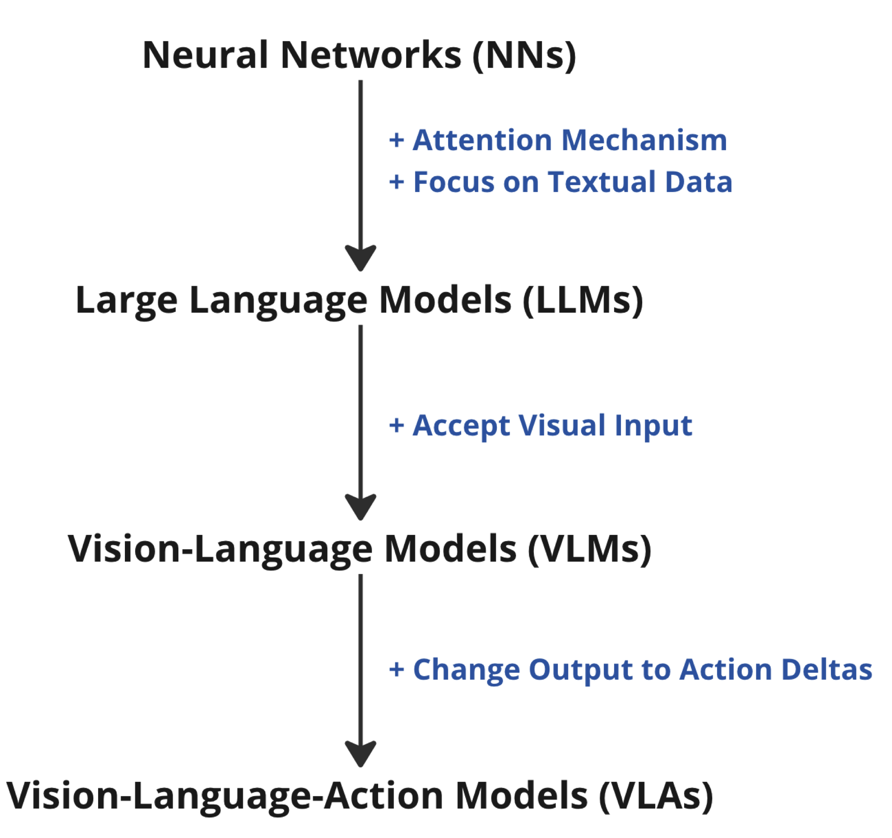

- An empirical comparison of performance and setup complexity between a VLA-based control policy and conventional deterministic control logic.
- Documentation of the hardware, software, and configuration challenges encountered while implementing the VLA system on real hardware.
- Qualitative insights from real-world deployment, with practical guidance for engineers considering VLA-based control.
Vision-Language-Action Models

A VLA model extends the lineage of modern neural networks. Large Language Models added attention over text, Vision-Language Models added image input, and VLA models replace the text output with robot action deltas, mapping a camera image and a language instruction directly to motion.
This research uses OpenVLA-7B, an open-source VLA. It combines a fused DINOv2 and SigLIP visual encoder with a Llama-2 7B language backbone, and decodes seven action tokens per step: position (Δx, Δy, Δz), rotation (Δroll, Δpitch, Δyaw), and a gripper state. It was pretrained on the BridgeData V2 dataset, which includes the WidowX 250 arm used here, making zero-shot deployment feasible without fine-tuning.

OpenVLA architecture: a fused visual encoder and a Llama-2 backbone predict tokenized actions that decode into continuous robot commands. Figure from the OpenVLA paper.